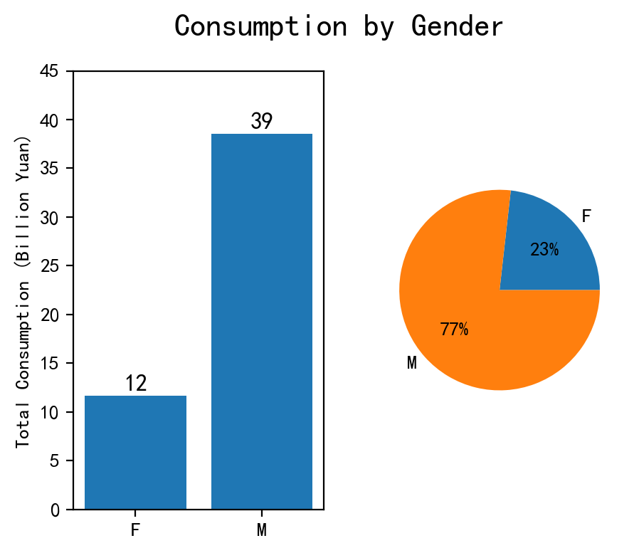
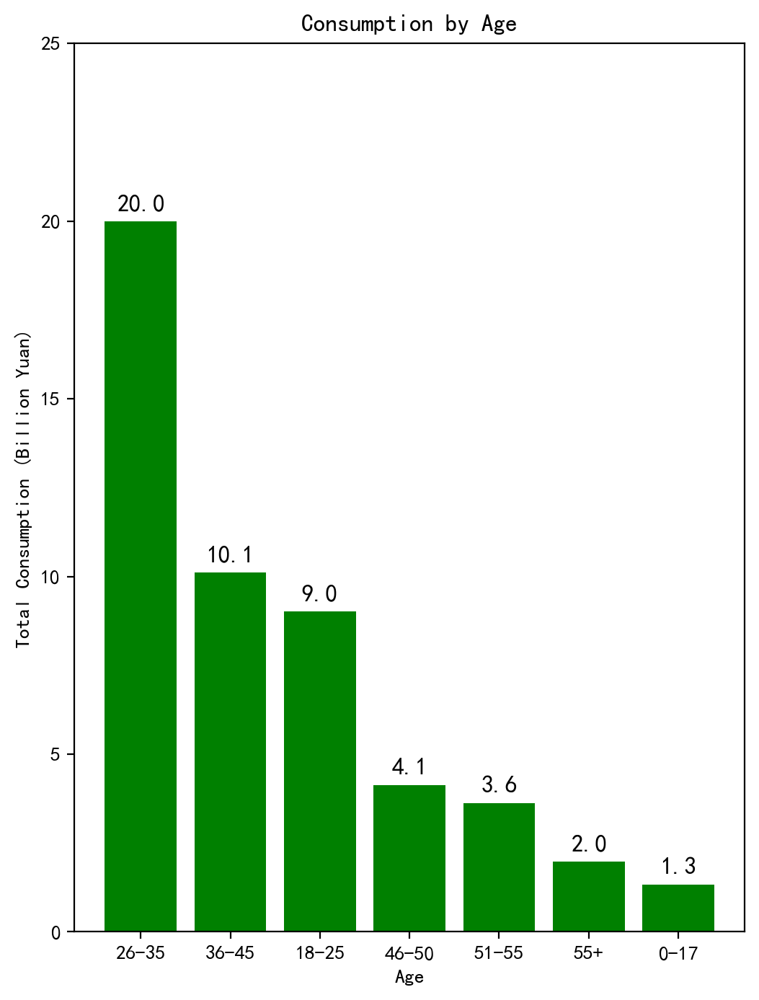
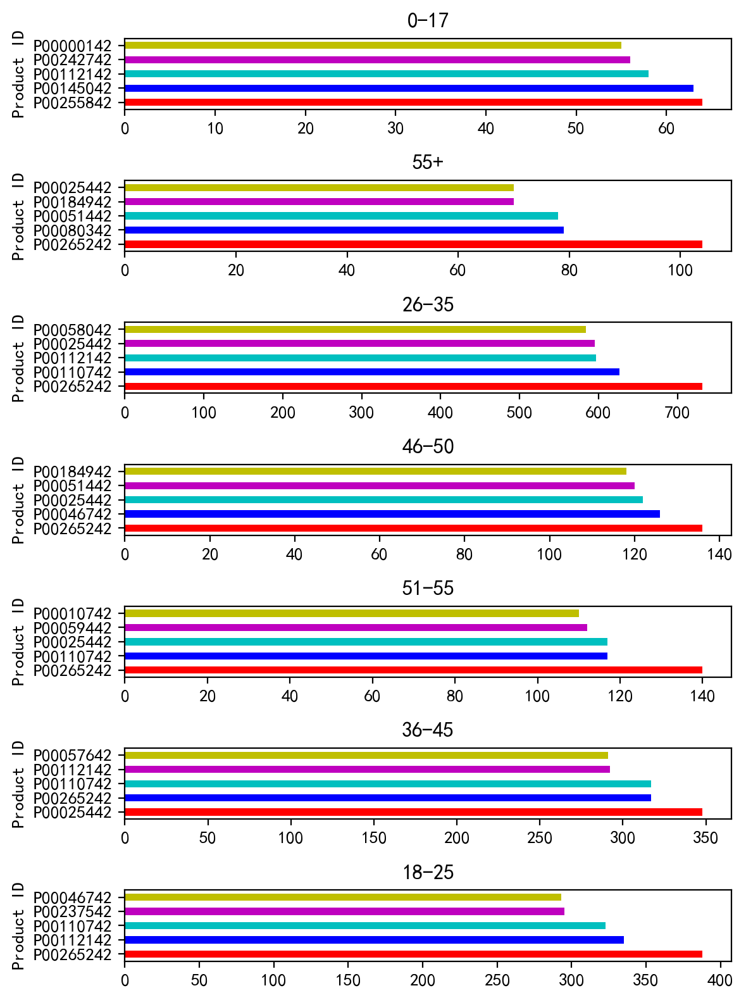
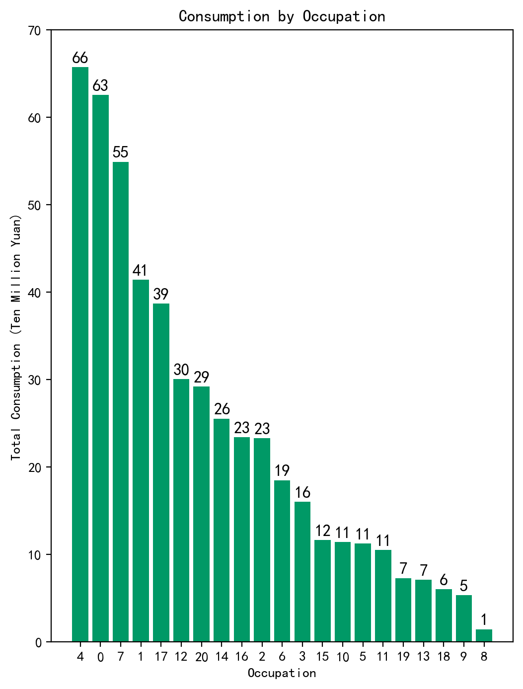
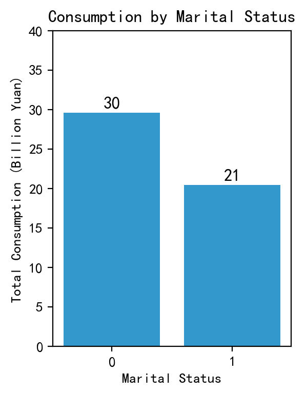
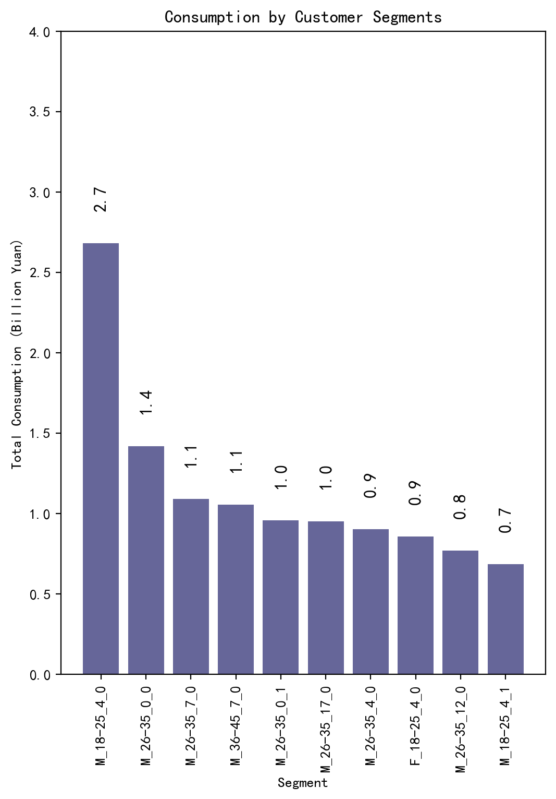
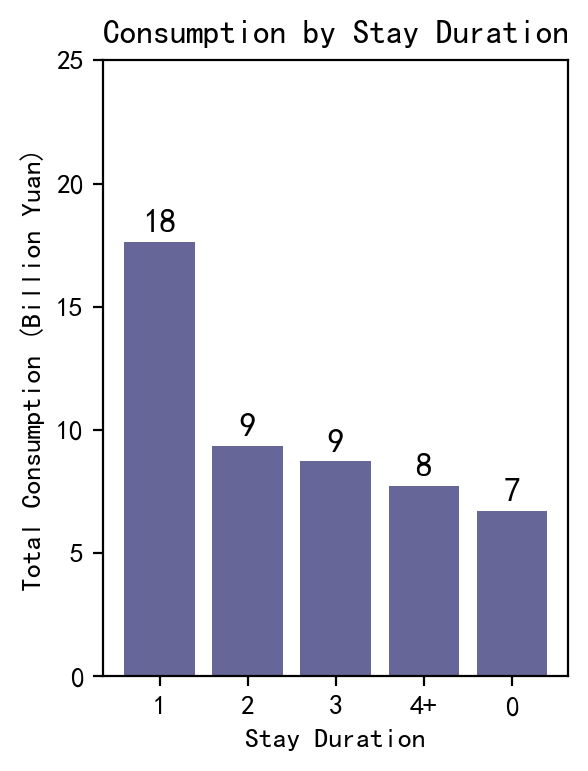
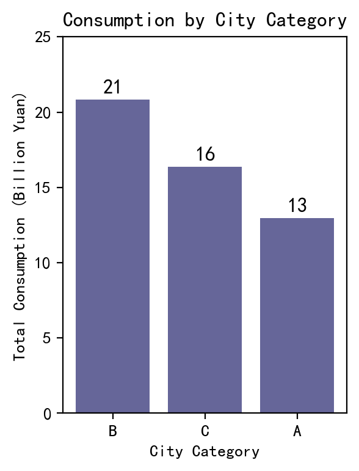
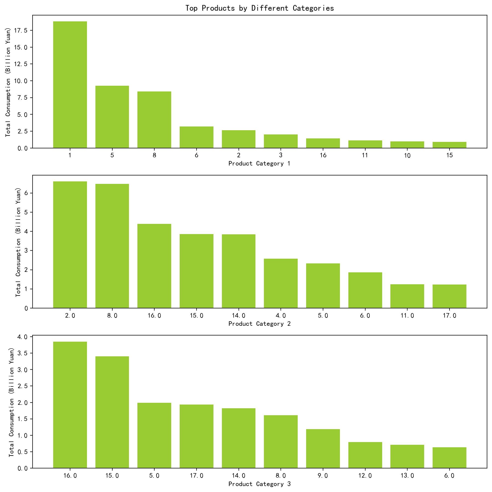

import pandas as pd
import numpy as np
import matplotlib.pyplot as plt
import seaborn as sns
plt.style.use('seaborn-bright')#设定绘图风格Black Friday Sales Data Analysis
Introduction
In the retail industry, Black Friday has become one of the most important sales days of the year. This day not only marks the beginning of the holiday shopping season but is also widely regarded as one of the largest promotional events of the year. On Black Friday, major retailers attract consumers through deep discounts and limited-time offers, driving sales and boosting performance.
This report aims to conduct a detailed analysis of Black Friday sales data to gain insights into consumer behavior, evaluate the effectiveness of promotional strategies, and provide data support and decision-making guidance for future sales events. By analyzing the data, we can identify sales trends, popular products, and changes in market demand, providing strong support for retailers to develop more effective marketing strategies and inventory management plans.
In the following sections, we will explore Black Friday sales data in detail, covering aspects such as sales revenue, customer traffic, product categories, and their sales performance. Our goal is to provide retailers with deep insights to help them better meet consumer demand in future sales events, achieving greater business success.
I. Define Analysis Objectives and Framework
- Overall Consumption Overview (Total Sales Revenue, Total Sales Volume, Average Transaction Value)
- User Profile Analysis (Exploring the Most Valuable User Types: Gender, Age, Occupation, Marital Status)
- City Performance Analysis (City Distribution, Length of Residence Distribution)
- Product Analysis (Exploring the Most Valuable Products)
导入库
II. Data Import and Understanding Data
Data Sources
This section will describe how to obtain and import Black Friday data. Data sources are crucial to ensure that the data used is reliable and relevant, providing a solid foundation for further analysis and modeling.
Data Acquisition Steps
1. Data Source Description
Black Friday is a major shopping holiday in the United States, typically occurring on the day after Thanksgiving, marking the start of the Christmas shopping season. Sales and shopping data related to Black Friday can be obtained from several sources:
- Public Datasets: Many organizations and companies release datasets related to Black Friday shopping, which often include sales figures, customer behavior, product information, etc.
- Commercial Data Providers: Commercial data providers such as Nielsen, Statista, and others may offer detailed market analysis data about Black Friday.
- Online Platforms: Some online data platforms (e.g., Kaggle) may provide relevant Black Friday datasets for research and analysis.
2. Data Download and Import
Here are the steps for obtaining and importing Black Friday data:
Step 1: Choose a Data Source
Select a reliable data source. For example, suppose we download a Black Friday sales dataset from Kaggle.
Step 2: Download the Dataset
Access the data source website (e.g., Kaggle), locate the relevant dataset, and follow these steps to download the data: 1. Register and log in to your Kaggle account. 2. Search for “Black Friday” datasets. 3. Click on the desired dataset, then download the CSV file or other format of the data file.
import pandas as pd
import pymysql
from sqlalchemy import create_engine
user = 'root'
password = 'chenlinghui1'
host = 'localhost'
port = '3306'
database = 'userbehavior'
engine = create_engine(f'mysql+pymysql://{user}:{password}@{host}:{port}/{database}')
table_name = 'black_friday'
query = f"SELECT * FROM {table_name}"
data = pd.read_sql(query, con=engine)
data.columns = [
'Customer ID',
'Product ID',
'Gender',
'Age',
'Occupation',
'City Category',
'Length of Residence',
'Marital Status',
'Product Category 1',
'Product Category 2',
'Product Category 3',
'Consumption Amount'
]
print("success") 顾客ID 商品ID 性别 年龄 职业 城市类别 居住时间 婚姻状况 商品类别1 商品类别2 商品类别3 消费金额
0 1000001 P00069042 F 0-17 10 A 2 0 3 NaN NaN 8370
1 1000001 P00248942 F 0-17 10 A 2 0 1 6.0 14.0 15200
2 1000001 P00087842 F 0-17 10 A 2 0 12 NaN NaN 1422
3 1000001 P00085442 F 0-17 10 A 2 0 12 14.0 NaN 1057
4 1000002 P00285442 M 55+ 16 C 4+ 0 8 NaN NaN 7969
successpd.options.display.max_rows=10
data.head()| Customer ID | Product ID | Gender | Age | Occupation | City Category | Length of Residence | Marital Status | Product Category 1 | Product Category 2 | Product Category 3 | Consumption Amount | |
|---|---|---|---|---|---|---|---|---|---|---|---|---|
| 0 | 1000001 | P00069042 | F | 0-17 | 10 | A | 2 | 0 | 3 | NaN | NaN | 8370 |
| 1 | 1000001 | P00248942 | F | 0-17 | 10 | A | 2 | 0 | 1 | 6.0 | 14.0 | 15200 |
| 2 | 1000001 | P00087842 | F | 0-17 | 10 | A | 2 | 0 | 12 | NaN | NaN | 1422 |
| 3 | 1000001 | P00085442 | F | 0-17 | 10 | A | 2 | 0 | 12 | 14.0 | NaN | 1057 |
| 4 | 1000002 | P00285442 | M | 55+ | 16 | C | 4+ | 0 | 8 | NaN | NaN | 7969 |
data.info()<class 'pandas.core.frame.DataFrame'>
RangeIndex: 537577 entries, 0 to 537576
Data columns (total 12 columns):
# Column Non-Null Count Dtype
--- ------ -------------- -----
0 顾客ID 537577 non-null int64
1 商品ID 537577 non-null object
2 性别 537577 non-null object
3 年龄 537577 non-null object
4 职业 537577 non-null int64
5 城市类别 537577 non-null object
6 居住时间 537577 non-null object
7 婚姻状况 537577 non-null int64
8 商品类别1 537577 non-null int64
9 商品类别2 370591 non-null float64
10 商品类别3 164278 non-null float64
11 消费金额 537577 non-null int64
dtypes: float64(2), int64(5), object(5)
memory usage: 49.2+ MBIII. Data Cleaning
data.isna().sum()Customer ID 0
Product ID 0
Gender 0
Age 0
Occupation 0
...
Marital Status 0
Product Category 1 0
Product Category 2 166986
Product Category 3 373299
Consumption Amount 0
Length: 12, dtype: int64data.fillna(0,inplace=True)IV. Exploratory Analysis
1. Overall Sales Performance
total_purchase = data['Consumption Amount'].sum()
total_product = data['Product ID'].count()
avg = total_purchase / data['Customer ID'].drop_duplicates(keep='first').count() # Average transaction value: Total sales / Number of customersprint('Total Sales Revenue: {:.2f} billion yuan'.format(total_purchase / 100000000))
print('Total Sales Volume: {}'.format(total_product))
print('Average Transaction Value: {:.1f} yuan'.format(avg))Total Sales Revenue: 50.18 billion yuan
Total Sales Volume: 537577
Average Transaction Value: 851751.5 yuanThe total sales revenue for this Black Friday was over 5 billion yuan, with a total sales volume of 537,577 units and an average transaction value of 851,751.5 yuan.
2. User Profile Analysis
gender：
import matplotlib.pyplot as plt
plt.rcParams['font.sans-serif'] = ['SimHei'] # Solve Chinese character issue
plt.rcParams['figure.dpi'] = 200 # Set resolution
fig, ax = plt.subplots(1, 2, figsize=(5, 4))
# Group by Gender and sum Consumption Amount
picture1 = data[['Consumption Amount']].groupby(data['Gender']).sum()
picture1 = picture1.div(100000000) # Convert to billions
# Bar plot for total consumption by gender
picture1_bars = ax[0].bar(picture1.index, picture1['Consumption Amount'])
ax[0].set_ylabel('Total Consumption (Billion Yuan)')
ax[0].set_ylim((0, 45))
for bar in picture1_bars:
height = bar.get_height()
ax[0].text(bar.get_x() + bar.get_width() / 2, height + 0.2, '{:.0f}'.format(height), ha='center', va='bottom', fontsize=12)
# Pie chart for consumption distribution by gender
labels = ['F', 'M']
ax[1].pie(picture1['Consumption Amount'], labels=labels, autopct='%1.0f%%')
fig.suptitle('Consumption by Gender', fontsize=16)
plt.show()
Men are the main consumers, with spending three times that of women.
age：
# Group by Age and sum Consumption Amount
age_data = data[['Consumption Amount']].groupby(data['Age']).sum()
age_data = age_data.div(100000000) # Convert to billions
age_data = age_data.sort_values(by='Consumption Amount', ascending=False)
# Plotting the data
fig = plt.figure(figsize=(6, 8))
age_bars = plt.bar(age_data.index, age_data['Consumption Amount'], color='g')
plt.title('Consumption by Age')
plt.xlabel('Age')
plt.ylabel('Total Consumption (Billion Yuan)')
plt.ylim((0, 25))
# Adding value labels on the bars
for bar in age_bars:
height = bar.get_height()
plt.text(bar.get_x() + bar.get_width() / 2, height + 0.2, '{:.1f}'.format(height), ha='center', va='bottom', fontsize=12)
plt.show()
plt.figure(figsize=(6, 8))
age_values = data['Age'].unique() # Use English column name for Age
count = 0
# Loop through each unique age value and plot top 5 most purchased products
for i in age_values:
count += 1
ax = plt.subplot(7, 1, count)
data.groupby('Age')['Product ID'].value_counts().loc[i].sort_values(ascending=False)[:5].plot(
kind='barh', color=['r', 'b', 'c', 'm', 'y'])
plt.title(i)
plt.tight_layout()
plt.show()
People aged 26-35 are typically those who have been in the workforce for 5-10 years. They have relatively less pressure and good financial status, making them the dominant consumer group.
Those aged 36-45 are usually sandwiched between caring for both elderly parents and young children. They have strong financial capabilities but tend to be mature and rational consumers.
Individuals aged 18-25 are either just entering university or the workforce. They are energetic consumers, full of curiosity about the world, but have relatively low financial strength.
Occupation：
# Group by Occupation and sum Consumption Amount
occupation = data[['Consumption Amount']].groupby(data['Occupation']).sum()
occupation = occupation.div(10000000).sort_values(by='Consumption Amount', ascending=False).reset_index()
occupation['Occupation'] = occupation['Occupation'].values.astype('str')
# Plotting the data
fig = plt.figure(figsize=(6, 8))
occupation_bars = plt.bar(occupation['Occupation'], occupation['Consumption Amount'], color='#009966')
plt.title('Consumption by Occupation')
plt.xlabel('Occupation')
plt.ylabel('Total Consumption (Ten Million Yuan)')
plt.ylim((0, 70))
# Adding value labels on the bars
for bar in occupation_bars:
height = bar.get_height()
plt.text(bar.get_x() + bar.get_width() / 2, height + 0.2, '{:.0f}'.format(height), ha='center', va='bottom', fontsize=12)
plt.show()
The top three occupations driving consumption are: Software Engineers, Teachers, and Doctors.
Marital Status：
marital_status = data[['Consumption Amount']].groupby(data['Marital Status']).sum()
marital_status = marital_status.div(100000000).sort_values(by='Consumption Amount', ascending=False).reset_index()
marital_status['Marital Status'] = marital_status['Marital Status'].values.astype('str')
# Plotting the data
fig = plt.figure(figsize=(3, 4))
marital_status_bars = plt.bar(marital_status['Marital Status'], marital_status['Consumption Amount'], color='#3399CC')
plt.title('Consumption by Marital Status')
plt.xlabel('Marital Status')
plt.ylabel('Total Consumption (Billion Yuan)')
plt.ylim((0, 40))
# Adding value labels on the bars
for bar in marital_status_bars:
height = bar.get_height()
plt.text(bar.get_x() + bar.get_width() / 2, height + 0.2, '{:.0f}'.format(height), ha='center', va='bottom', fontsize=12)
plt.show()
Singles are more active in consumption compared to those with families.
Customer Segmentation:
# Copy and preprocess the data
data2 = data.copy()
data2['Occupation'] = data2['Occupation'].values.astype('str')
data2['Marital Status'] = data2['Marital Status'].values.astype('str')
# Create a combined user profile column
f = lambda x: x['Gender'] + '_' + x['Age'] + '_' + x['Occupation'] + '_' + x['Marital Status']
data2['user'] = data2.apply(f, axis=1)
# Group by user profile and sum Consumption Amount
df = data2[['Consumption Amount']].groupby(data2['user']).sum()
df = df.div(100000000).sort_values(by='Consumption Amount', ascending=False).reset_index()
df = df.head(10).copy()
# Plotting the data
fig = plt.figure(figsize=(6, 8))
user_bars = plt.bar(df['user'], df['Consumption Amount'], color='#666699', width=0.8)
plt.title('Consumption by Customer Segments')
plt.xlabel('Segment')
plt.ylabel('Total Consumption (Billion Yuan)')
plt.ylim((0, 4))
plt.xticks(rotation=90)
# Adding value labels on the bars
for bar in user_bars:
height = bar.get_height()
plt.text(bar.get_x() + bar.get_width() / 2, height + 0.2, '{:.1f}'.format(height), ha='center', va='bottom', fontsize=12, rotation=90)
plt.show()
Optimal value user profile: unmarried males aged 18-25, working as software engineers
3.City Performance Analysis
Stay_Year=data[['Consumption Amount']].groupby(data['Length of Residence']).sum()
Stay_Year=Stay_Year.div(100000000).sort_values(by='Consumption Amount',ascending=False).reset_index()
Stay_Year['Length of Residence']=Stay_Year['Length of Residence'].values.astype('str')
fig=plt.figure(figsize=(3,4))
Stay_Years=plt.bar(Stay_Year['Length of Residence'],Stay_Year['Consumption Amount'],color='#666699')
plt.title('Consumption by Stay Duration')
plt.xlabel('Stay Duration')
plt.ylabel('Total Consumption (Billion Yuan)')
plt.ylim((0,25))
for Stay_Year1 in Stay_Years:
height = Stay_Year1.get_height()
plt.text(Stay_Year1.get_x()+Stay_Year1.get_width()/2,height+0.2,'%.f'%height,ha='center',va='bottom',fontsize=12)
plt.show()
People who have just moved to the city have more consumer vitality than others.
# Group by City Category and sum Consumption Amount
stay_city = data[['Consumption Amount']].groupby(data['City Category']).sum()
stay_city = stay_city.div(100000000).sort_values(by='Consumption Amount', ascending=False).reset_index()
stay_city['City Category'] = stay_city['City Category'].values.astype('str')
# Plotting the data
fig = plt.figure(figsize=(3, 4))
stay_city_bars = plt.bar(stay_city['City Category'], stay_city['Consumption Amount'], color='#666699')
plt.title('Consumption by City Category')
plt.xlabel('City Category')
plt.ylabel('Total Consumption (Billion Yuan)')
plt.ylim((0, 25))
# Adding value labels on the bars
for bar in stay_city_bars:
height = bar.get_height()
plt.text(bar.get_x() + bar.get_width() / 2, height + 0.2, '{:.0f}'.format(height), ha='center', va='bottom', fontsize=12)
plt.show()
4.Optimal Product Analysis
df1 = data[['Consumption Amount']].groupby(data['Product Category 1']).sum()
df1 = df1.div(100000000).sort_values(by='Consumption Amount', ascending=False).reset_index()
df1 = df1.head(10)
df1['Product Category 1'] = df1['Product Category 1'].values.astype('str')
# Filter data for Product Category 2 and group by Product Category 2
data1 = data[data['Product Category 2'] > 0]
df2 = data1[['Consumption Amount']].groupby(data1['Product Category 2']).sum()
df2 = df2.div(100000000).sort_values(by='Consumption Amount', ascending=False).reset_index()
df2 = df2.head(10)
df2['Product Category 2'] = df2['Product Category 2'].values.astype('str')
# Filter data for Product Category 3 and group by Product Category 3
data2 = data[data['Product Category 3'] > 0]
df3 = data2[['Consumption Amount']].groupby(data2['Product Category 3']).sum()
df3 = df3.div(100000000).sort_values(by='Consumption Amount', ascending=False).reset_index()
df3 = df3.head(10)
df3['Product Category 3'] = df3['Product Category 3'].values.astype('str')
# Plotting the data
fig, ax = plt.subplots(3, 1, figsize=(10, 10))
# Bar plot for Product Category 1
ax[0].bar(df1['Product Category 1'], df1['Consumption Amount'], color='#99CC33')
ax[0].set_xlabel('Product Category 1')
ax[0].set_ylabel('Total Consumption (Billion Yuan)')
ax[0].set_title('Top Products by Different Categories')
# Bar plot for Product Category 2
ax[1].bar(df2['Product Category 2'], df2['Consumption Amount'], color='#99CC33')
ax[1].set_xlabel('Product Category 2')
ax[1].set_ylabel('Total Consumption (Billion Yuan)')
# Bar plot for Product Category 3
ax[2].bar(df3['Product Category 3'], df3['Consumption Amount'], color='#99CC33')
ax[2].set_xlabel('Product Category 3')
ax[2].set_ylabel('Total Consumption (Billion Yuan)')
plt.tight_layout()
plt.show()
Top three consumer spending categories
for Product Type 1: TV, smartphones, laptops Top three consumer spending categories
for Product Type 2: T-shirts, suits, sneakers Top three consumer spending categories
for Product Type 3: refrigerators, air conditioners, smartwatches
5.Conclusion
Focusing on niche markets In order to stand out in a competitive market, we will classify the market, accurately identify consumer groups, especially focusing on the younger generation, tech enthusiasts, and users who demand high value-for-money products. By deeply analyzing customer needs, consumption habits, and market trends, we will formulate targeted marketing strategies to gain more market share. Expanding the inventory of Product Type 1, which is about electronic products To better meet market demands and enhance product supply capabilities, we plan to increase inventory in the following core product categories to ensure that consumers can promptly get the products they desire, reduce stockout rates, and enhance customer satisfaction: TVs: Further expand based on existing inventory, covering more sizes and models to meet diverse needs of households, gamers, and professionals. Smartphones: Increase inventory of major brands’ smartphones, covering various price ranges from entry-level to flagship models to cater to different consumer needs, especially targeting users interested in 5G phones and high-performance devices. Laptops: Increase the inventory of laptops, focusing on popular models like high-performance, thin and lightweight, and gaming laptops, to ensure providing the best choices for users in various scenarios including work, study, and entertainment. Develop discount strategies for the 18-25 age group For the young consumer group aged 18-25, introduce exclusive discounts and promotions to enhance brand appeal and stickiness. These can be promoted through: Student activities: Provide exclusive student discounts for school students, such as special discounts through student verification to encourage young people to choose our products, similar to educational discounts by Apple, etc. Social media marketing: Utilize active social media platforms among young people, such as TikTok, Facebook, Instagram, etc., to conduct interactive activities and limited-time offers to arouse their buying desire, can offer billions of subsidies on Pinduoduo. Exclusive benefits for members: Introduce a variety of benefits for consumers in this age group, such as exclusive discounts for members, birthday gifts, points redemption, etc., to enhance user shopping experience and brand loyalty. Package discounts: Launch diverse product combination packages, such as smartphones with headphones, laptops with accessories, etc., bundled sales to increase product appeal, while providing consumers with higher cost-effectiveness.